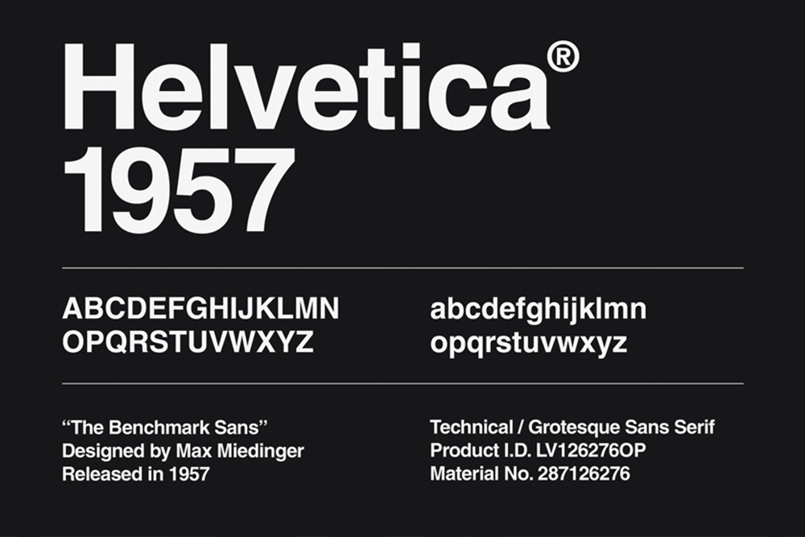
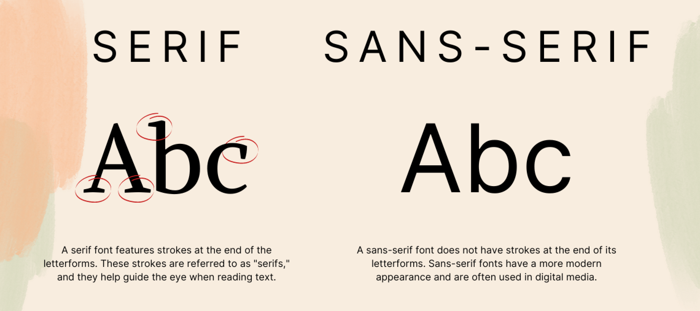

Eenvoudig, neutraal, gemakkelijk.
Helvetica? Nee FF Nort.
Het oorspronkelijke lettertype dat ik moest opsporen en bestuderen, was FF Nort, ontworpen door Jörg Hemker in 2017. In mijn voorbeeld was het echter lastig te identificeren. Na het bekijken van verschillende lettertypen, met de nadruk op schreefloze varianten, dacht ik dat het Helvetica was vanwege de x-hoogte en de dikke, strakke afwerking,
Echter, FF Nort is een humanistisch schreefloos lettertype, terwijl Helvetica een neo-grotesk lettertype is. FF Nort haalt zijn inspiratie uit het Britse Transport (typeface), een geometrisch schreefloos lettertype dat op zijn beurt weer geïnspireerd is door Helvetica. Dit was vooral belangrijk omdat duidelijke leesbaarheid een prioriteit was voor de Britse overheid, met name voor verkeersborden.
Hemker heeft het skelet van eerdere Britse ontwerpen gebruikt en hierop voortgebouwd, waarbij hij het fundament van het vorige ontwerp als basis nam om een veelzijdiger lettertype te creëren. Kortom, het lettertype "FF Nort" is ideaal voor moderne druk- en digitale projecten. Het is een eigentijdse herinterpretatie van het Transport-lettertype, waarbij het oorspronkelijke ontwerp is aangepast en geüpdatet voor hedendaagse toepassingen.
 Probeer FF Nort hier
Probeer FF Nort hier
Helvetica
Helvetica is het bekendste schreefloze lettertype en is ontworpen door Max Miedinger en Eduard Hoffmann voor Haas'sche Schriftgießerei, een Zwitserse lettergieterij in Münchenstein. Het doel was om een schreefloos lettertype te creëren dat een hoge helderheid bood, vrij was van intrinsieke betekenis in zijn vorm, en geschikt was voor een breed scala aan bewegwijzeringstoepassingen.
In 1898 bracht de Berthold Type Foundry het lettertype Akzidenz-Grotesk uit, en dit diende als de initiële inspiratiebron voor Helvetica. Notitieboekjes van Hoffman, waarvan later is ontdekt dat ze zorgvuldige vergelijkingen bevatten tussen Helvetica-testproeven en specifieke delen van Akzidenz-Grotesk-letters, bevestigen deze connectie. Opmerkelijk is dat Helvetica zo'n enorme populariteit verwierf dat het uiteindelijk Akzidenz-Grotesk verdrong, dat gedurende de afgelopen halve eeuw het meest gangbare lettertype was.
Het werd al snel een van de meest geliefde lettertypen sinds tientallen jaren en is ontworpen in het analoge tijdperk in 1957. Dit komt mede door zijn minimalistische, neutrale karakter, typografische eigenschappen en leesbaarheid. Het succes van Helvetica kan worden verklaard door de unieke kenmerken, waaronder een hoge x-hoogte. waardoor het lettertype op afstand gemakkelijker te lezen is.

Hedendaags is Helvetica erg populair en wordt het veel gebruikt, het is een duidelijk leesbaar en helder lettertype, zonder overbodige versieringen, daarom is het zo wijdverspreid in websites, logo's en algemeen grafisch ontwerp. Merken zoals BMW, Kawasaki, Motorola, Nestlé, Skype, Microsoft en Apple die Helvetica veelzijdigheid benutten. maar ook steden zoals York City of Madrid die dit veel inzetten voor hun communicatie. Echter is wel het nadeel dat Helvetica neutraal en onopvallend. is.
Helvetica komt in veel verschillende versies. zo is er de originele versie van Helvetica, maar ook Helvetica Neue: Dit is een herziene versie van Helvetica die in 1983 werd uitgebracht met een iets scherpere uitstraling dan de originele Helvetica en ook is er Helvetica Now: Helvetica Now is een recentere versie die in 2019 werd uitgebracht door Monotype. ontworpen om de tekortkomingen van de oorspronkelijke Helvetica aan te pakken. zo zijn er nog veel meer verschillende versies. hier onder een paar.
- Helvetica Neue LT
- Helvetica World
- Helvetica Compressed
- Helvetica Inserat
- Helvetica Rounded
- Helvetica Monospaced
Sans Serif
Helvetica is een Serif-lettertypen en dat zijn lettertypen zonder schreef de kleine streepjes aan het uiteinde van letters. en staan in contrast met schreeflettertypen zoals Times New Roman of Georgia. Ze zijn ontstaan in de late 18e eeuw, maar hun populariteit nam vooral toe in de 20e eeuw. Beroemde Sans Serif-lettertypen zijn Helvetica, Arial en Futura.
Neo-Grotesk
Helvetica is een Neo-Grotesk schreefloos lettertype dat strakker en minder organisch is dan Humanistische schreefloze lettertypen. Het heeft meestal dezelfde lijndikte en ziet er modern uit.

Op dit punt werd het bijhouden van lettertypes en letterfamilies verwarrend, en begon ik dingen door elkaar te halen. Om voor mezelf meer overzicht te creëren, heb ik een visuele weergave gemaakt, die u hieronder kunt zien. Hiermee kan in één oogopslag worden gezien waar elke subklasse oorspronkelijk vandaan komt.

Dyslexie
Persoonlijk voel ik me sterk aangetrokken tot schreefloze tekst, wat verband houdt met mijn dyslexie. Een elegant lettertype (of sierlijke lettertypen) kan een sterke indruk maken, een statement vormen en creativiteit uitdrukken. Omdat de definitie van schoonheid in lettertypen subjectief is, zijn er veel verschillende stijlen en ontwerpen mogelijk. Maar voor mij persoonlijk brengt dit complicaties met het lezen van tekst met zich mee, waardoor ik soms worstel met de vertaling en wat de schrijver probeert over te brengen.